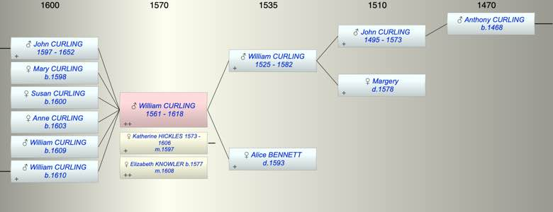

| [Index] |
| William CURLING (1561 - 1618) |
|  |
| b. abt 1561 |
| m. (1) 28 Oct 1597 Katherine HICKLES (1573 - 1606) at St Laurence |
| m. (2) 23 May 1608 Elizabeth KNOWLER (1577 - ) at St Laurence |
| d. 1618 aged 57 |
| Parents: |
| William CURLING (1525 - 1582) |
| Alice BENNETT ( - 1593) |
| Siblings (6): |
| Roger CURLING (1557 - 1590) |
| Gregory CURLING (1559 - 1608) |
| Susanna CURLING (1563 - 1604) |
| Alice CURLING (1564 - 1570) |
| Anthony CURLING (1567 - 1626) |
| Nicholas CURLING (1570 - 1619) |
| Children (6): |
| John (1) CURLING (1597 - 1652) |
| Mary CURLING (1598 - ) |
| Susan CURLING (1600 - ) |
| Anne CURLING (1603 - ) |
| William CURLING (1609 - ) |
| William CURLING (1610 - ) |
| Events in William CURLING (1561 - 1618)'s life | |||||
| Date | Age | Event | Place | Notes | Src |
| abt 1561 | William CURLING was born | ||||
| 1582 | 21 | Death of father William CURLING (aged 57) | Note 1 | ||
| 1593 | 32 | Death of mother Alice BENNETT | Note 2 | ||
| 1597 | 36 | Birth of son John (1) CURLING | St Peters | Note 3 | |
| 28 Oct 1597 | 36 | Married Katherine HICKLES (aged 24) | St Laurence | ex FMP | |
| 1598 | 37 | Birth of daughter Mary CURLING | St Peters | Note 4 | |
| 1600 | 39 | Birth of daughter Susan CURLING | St Peters | Note 5 | |
| 1603 | 42 | Birth of daughter Anne CURLING | St Peters | Note 6 | |
| abt 1606 | 45 | Death of wife Katherine HICKLES (aged 33) | |||
| 23 May 1608 | 47 | Married Elizabeth KNOWLER (aged 31) | St Laurence | ex FMP PR no details | |
| 1609 | 48 | Birth of son William CURLING | St Laurence | Note 7 | |
| 1610 | 49 | Birth of son William CURLING | St Laurence | Note 8 | |
| 1618 | 57 | William CURLING died | Note 9 | ||
| Death of son William CURLING | St Laurence | presumably in 1609/10 | |||
| Personal Notes: |
|
CCA PRC17/62/278 & PRC/16/161 C24
Summary of the Will of William Curling of St Lawrence,Thanet made 9 June 1616, proved 17 April 1618 His will establishes that: - he was to be buried in the church yard at St Laurence, ‘near unto the palm tree’ - his wife Elizabeth was to receive £100 and his sorrel gelding with furniture [saddle & bridle?]. - his three daughters Mary, Susan and Ann were each to receive £30 at age 21. - his youngest son William was to have £30, paid to testator’s wife to keep until he reached 21. She to have it if son William died. - wife, son John and younger children were to have household stuff and implements, ⅓ for wife, ⅓ for John and the other ⅓ for the remaining 4 younger children - residue of goods and chattels were to go to John - his son John was executor (his majority not referred to). - his four younger children Mary, Susan, Ann and William were under 21 and so born after 1595. Witnesses Robert Sprakeling, John Joade and Richard Michell. There are two baptisms at St Lawrence of William, son of William after 1595 ie bap St L 1609 (died in infancy) and another bap 1610. The dates fit with the marriage to Elizabeth Knowler at St Lawrence in 1608. The will refers to 5 children so it is possible they were all born in the period 1608 to 1616 however there appear to be no baptisms of William’s children after 1610 and so a previous marriage is likely. The the marriage of William Curling to Katherine Hickles at St L 28 Oct 1597 fits with the baptisms of the other children at St Peters: John 21 Mar 1597 Mary 2 Apr 1598 Susan 18 Jan 1600 Anne 18 Sep 1603 There should be a burial of William’s first wife Katherine between 1597 and 1608 but this has not been found. Given that William’s eldest son John was baptised in 1597 William could not have been born in 1588 as Cotton supposed, so William whose will it was was not son of Gregory. However William’s son John was a contemporary of Gregory’s nieces and nephews and it is very plausible that William was Gregory’s brother and so Chilton would have gone from Gregory to his brother William and then to possibly to William’s son John. It is significant that Gregory pays particular attention to his brother William’s son John in his will. Churchwarden 1615 (see Cotton) |
| Created on a Mac™ using iFamily for Mac™ on 8 Oct 2023 |